B2B
B2B SaaS · продуктовый хакатон · 2025
Кабинет
менеджера
Единое рабочее пространство для заявок, претензий и аналитики строительных проектов.

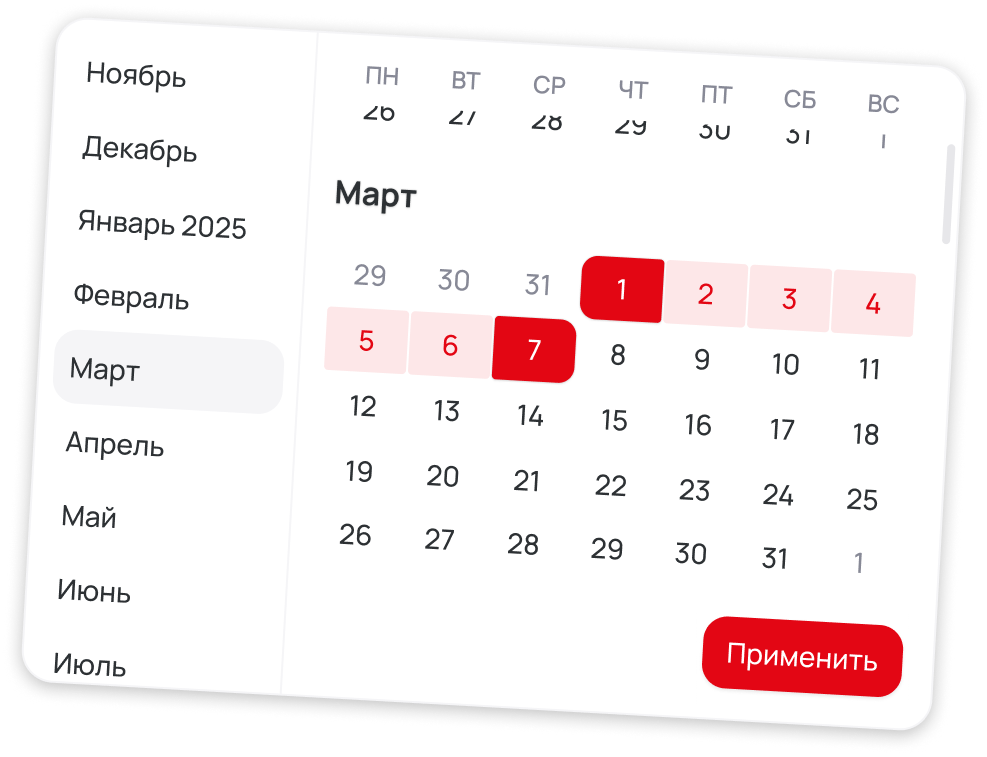
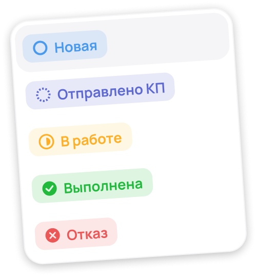
Задача
Собрать разрозненные заявки в управляемый процесс
Заявки приходили через Telegram, WhatsApp, почту и звонки — менеджеры теряли контекст, статусы и время.
Для бизнеса это означало потерянные лиды, непрозрачную обработку и отсутствие данных о причинах отказов. Для клиента — тревожное общение в личных чатах и отсутствие официального сценария претензии.
Решением стал внутренний кабинет с единым реестром, жизненным циклом заявки, связанными претензиями и аналитикой процесса.
Собрать
Все обращения и данные клиента в одной рабочей области.
Провести
Понятные статусы, действия и ответственные на каждом этапе.
Измерить
Динамика, причины отказов и источники лидов для руководителя.
Ограничения
Три дня потребовали выбрать главное, а не проектировать всё
Вместо полного исследования команда сфокусировалась на ключевых рабочих сценариях и превратила ограничения брифа в проверяемые дизайн-гипотезы.
Бриф заказчика
Определил бизнес-задачи, роли и обязательные сценарии системы.
JTBD по брифу
Помогли связать проблемы процесса с задачами менеджера и ценностью.
Без интервью
Гипотезы требуют дальнейшей проверки на реальных пользователях.
Результат хакатона показывает качество концепции и подачи, но не доказывает сокращение времени обработки или снижение потерь заявок.
Jobs to be done
Каждая механика отвечает на конкретную потерю процесса
Найти заявку без переключения каналов
Единый реестр, поиск, фильтры и сортировка.
Восстановить контекст за несколько секунд
Сайд-панель с данными, документами, звонками и перепиской.
Понимать этап и следующее действие
Статусы и два представления одного жизненного цикла.
Контролировать спорные ситуации
Претензия как самостоятельный, но связанный объект.
Находить узкие места отдела
Аналитика динамики, отказов, источников и регионов.
Архитектура
Три модуля разделяют задачи, но сохраняют общий контекст
После входа менеджер работает с одним из трёх экранов: заявки, претензии или аналитика. Регистрация и настройки сознательно остались за рамками хакатона.
01
Работа с заявками
Реестр, канбан, фильтры, сайд-панель, комментарии, документы и смена статуса.
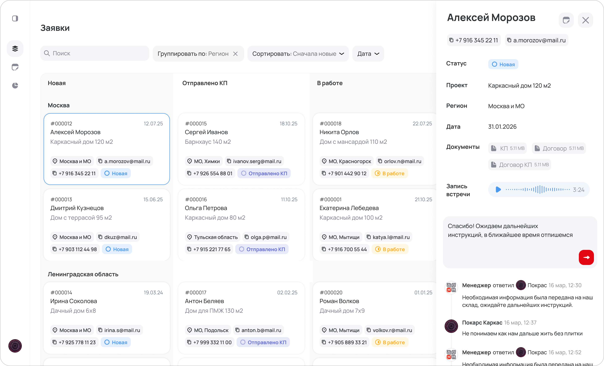
02
Работа с претензиями
Создание, материалы, связь с исходной заявкой и собственный жизненный цикл.
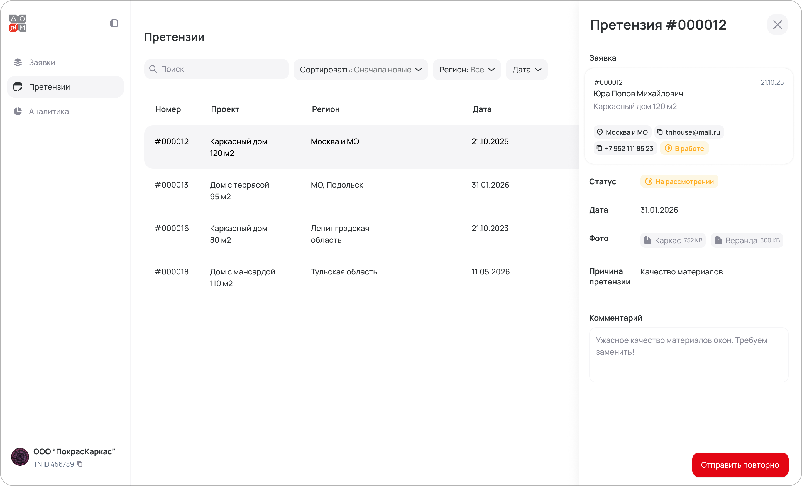
03
Аналитика
Период, регион, динамика заявок, причины отказов и источники лидов.
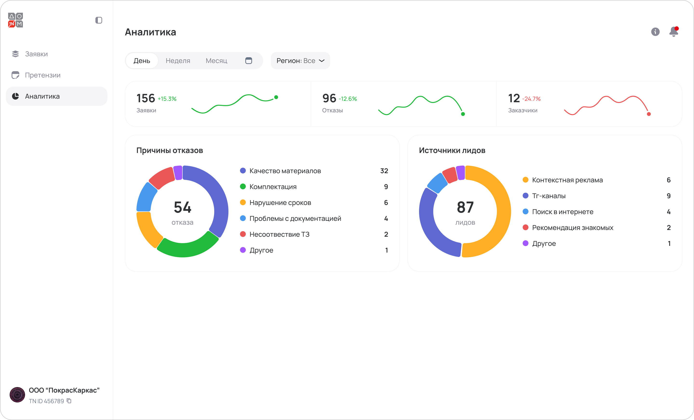
Принципы решения
Быстрый доступ, сохранение контекста и прозрачный процесс
Единый список сокращает поиск
Все источники сходятся в одном реестре с фильтрами и массовыми действиями.
Сайд-панель сохраняет контекст
Детали открываются поверх списка без перехода на отдельную страницу.
Два вида поддерживают две роли
Таблица помогает анализировать объём, канбан — управлять этапами.
Претензия получает свой цикл
Спорная ситуация остаётся связана с заявкой, но не смешивается с ней.
Ключевое решение
Заявка стала единым объектом работы менеджера
Состояние всех заявок считывается за несколько секунд.
Менеджер видит клиента, проект, регион, дату и статус, быстро меняет представление и открывает детали, не теряя позицию в общем списке.
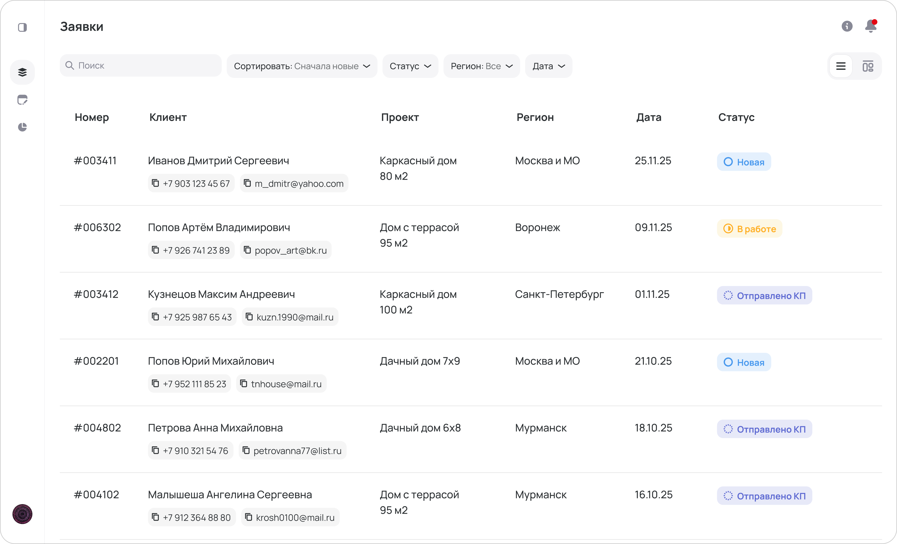
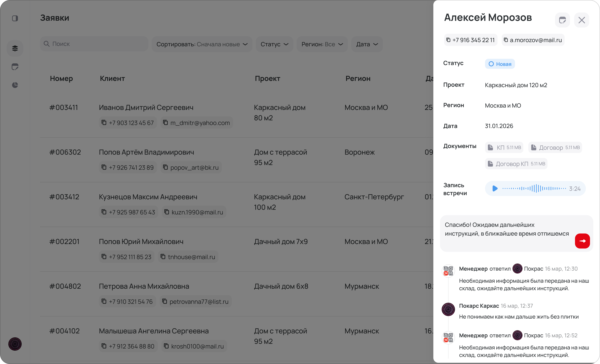
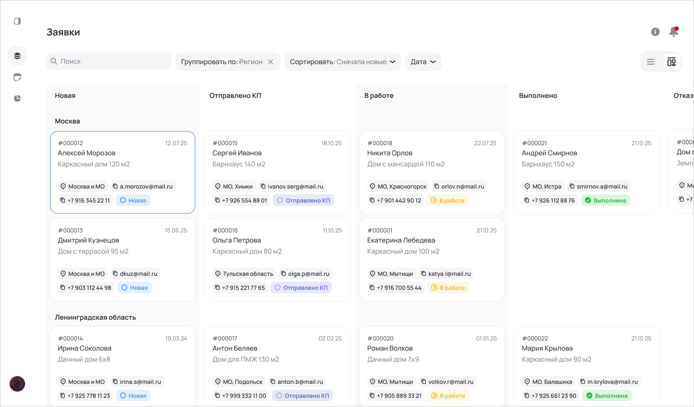
Спорные ситуации
Претензия сохраняет связь с заявкой и получает свой статус
Причина обращения, файлы, фотографии, комментарии и история статусов собраны в отдельном модуле — так конфликт не теряется в переписке и остаётся контролируемым.
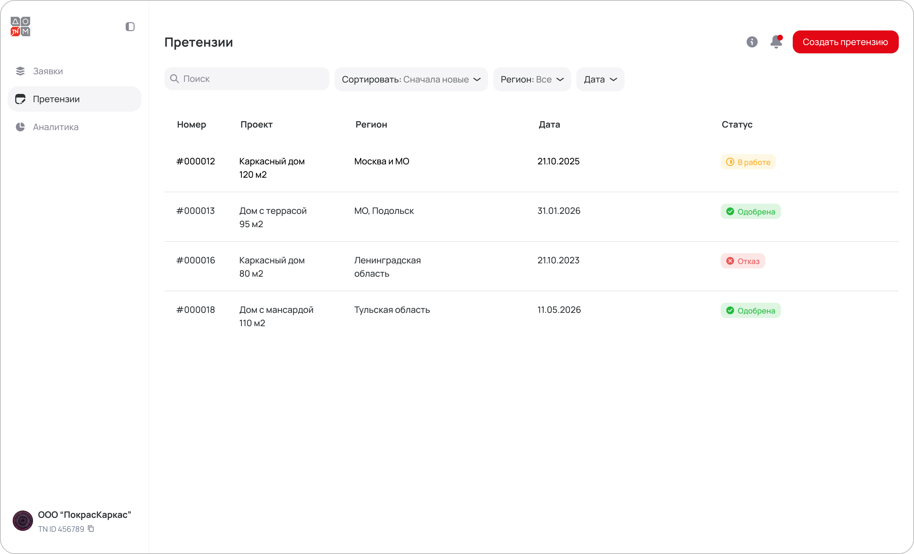
UI-kit и адаптив
Компоненты ускорили сборку и удержали единый язык интерфейса
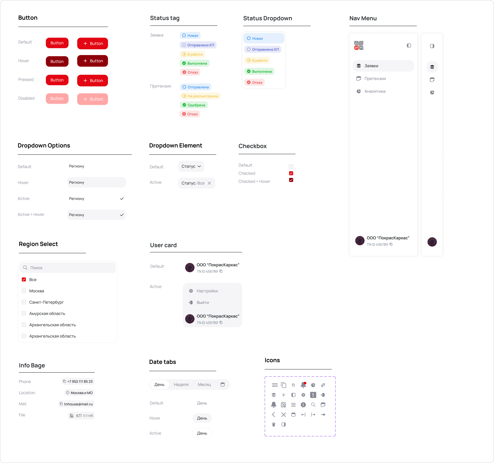
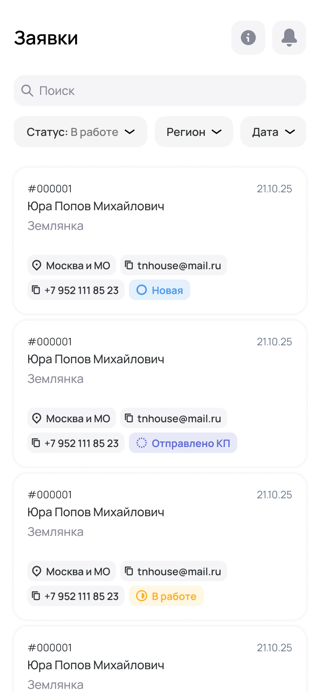
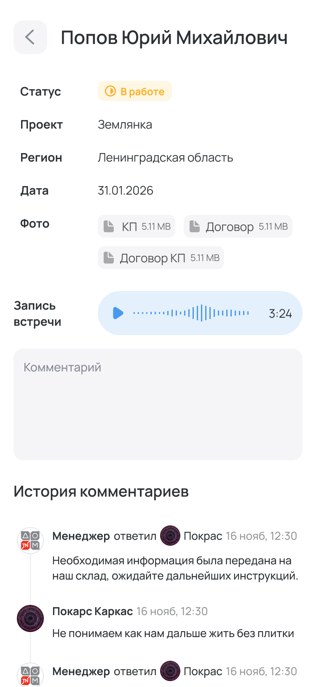

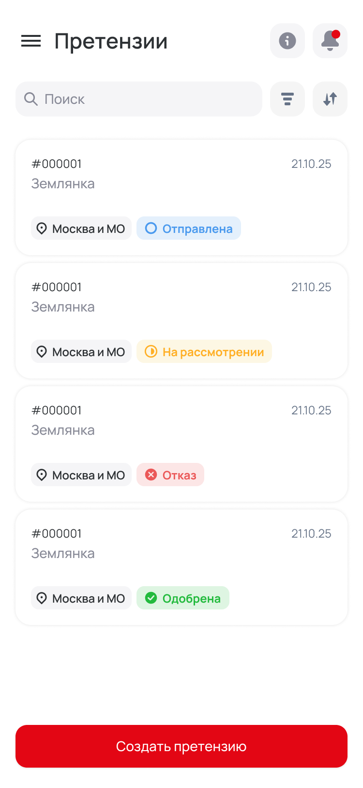
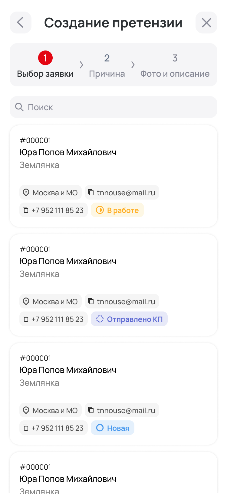
Следующий этап
Победа подтвердила концепцию, но не продуктовые гипотезы
NEXT
Проверка на менеджерах
Дать участникам найти заявку, изменить статус, восстановить контекст и создать претензию без подсказок.
Основной показательВремя и ошибки в ключевых сценариях
- Интервью с менеджерами
- Модерируемые тесты
- Время обработки заявки
- Количество переключений
- Причины отказов
- Использование мобильной версии
Итог
За три дня команда собрала цельную B2B-систему и победила
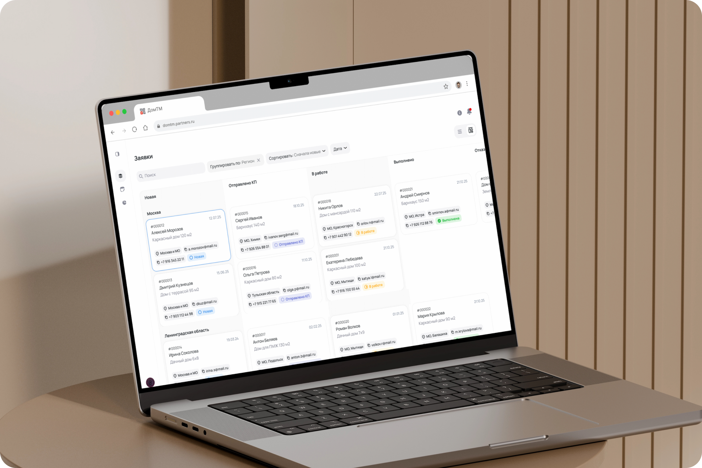
Что осталось после проекта
Единая модель заявки, прозрачные статусы, связанный сценарий претензий, аналитика и компонентная основа для развития продукта. Главный профессиональный вывод — в B2B на первом месте скорость считывания, доступность информации и предсказуемость процесса.